Appendici lette: 2025 Appendice-statistica_Rilevazione-Multiscopo-Censimento-imprese.xlsx, 2022 Appendice-statistica-Censimprese.xlsx. Rilascio BACH: 20260914.
Censimento permanente delle imprese 2025: le fonti di finanziamento, a confronto con BACH
Diffusione fra le imprese (Istat) e peso nei bilanci (BACH), Italia, edizioni 2022 e 2025
Imprese
Credito
Istat
BACH
Censimento
Innovazione
Europa
Quante imprese usano fido, prestiti, leasing, garanzie pubbliche e capitale proprio secondo il Censimento Istat 2025, quanto pesano le stesse fonti nei bilanci delle società di capitali (BACH) se il credito va ai settori che innovano e come si colloca l’Italia in Europa (Eurostat CIS, BCE SAFE).
Paolo Volterra ![]()
Fonte: Istat, Censimento permanente delle imprese 2025: primi risultati (29 ottobre 2026) e Appendice statistica; per il confronto, l’Appendice dell’edizione 2022 e il database BACH (Italia). Le appendici xlsx si leggono dai file originali Istat, BACH si scarica a ogni esecuzione.
Che cosa contiene. La Rilevazione multiscopo chiede a un campione di circa 265mila imprese con almeno 3 addetti quali fonti di finanziamento hanno usato, perché sono ricorse al credito esterno, se hanno chiesto e ottenuto prestiti, se intendono ricapitalizzarsi. Le risposte sono riportate all’universo (stime con decimali): quante imprese usano una fonte, non quanto debito o capitale. La terza edizione ha anno di riferimento 2025; la seconda il 2022.
Perché interessa per BACH. BACH misura le stesse fonti dal lato del bilancio, in percentuale del totale attivo: debiti verso banche a breve (L21) e a medio-lungo termine (L22), debiti commerciali (L4), altri debiti finanziari, soprattutto infragruppo (L31), obbligazioni (L1), patrimonio netto (E). Le due fonti guardano lo stesso fenomeno da due lati: diffusione fra le imprese contro peso nei bilanci.
Limiti strutturali per il confronto.
Unità diverse: la Rilevazione conta imprese (ogni impresa pesa uno), BACH somma bilanci (la media ponderata riflette le imprese grandi).
Classi diverse: la Rilevazione classifica per addetti, BACH per fatturato; nessun raccordo esatto.
Anni diversi: Rilevazione 2022 e 2025, BACH Italia fino al 2024.
Universo: la Rilevazione include imprese individuali e società di persone con almeno 3 addetti; BACH Italia le sole società di capitali con bilancio depositato.
1. L’universo e il controllo delle tavole
Ogni tavola ha un blocco di valori assoluti e uno di percentuali. Il notebook legge i valori assoluti e ricalcola le percentuali; il confronto con quelle pubblicate controlla la lettura.
| settore | classe | imprese 2022 | imprese 2025 | var. % |
|---|---|---|---|---|
| Industria in senso stretto | Totale | 188,255.0 | 181,807.7 | -3.4 |
| Industria in senso stretto | 3-9 | 116,334.0 | 107,763.9 | -7.4 |
| Industria in senso stretto | 10-19 | 40,188.0 | 39,822.8 | -0.9 |
| Industria in senso stretto | 20-49 | 20,325.0 | 21,715.0 | 6.8 |
| Industria in senso stretto | 50-99 | 6,349.0 | 6,950.0 | 9.5 |
| Industria in senso stretto | 100-249 | 3,507.0 | 3,857.0 | 10.0 |
| Industria in senso stretto | 250 e oltre | 1,552.0 | 1,699.0 | 9.5 |
| Costruzioni | Totale | 122,215.0 | 129,324.0 | 5.8 |
| Costruzioni | 3-9 | 98,277.0 | 100,359.0 | 2.1 |
| Costruzioni | 10-19 | 16,985.0 | 19,877.0 | 17.0 |
| Costruzioni | 20-49 | 5,428.0 | 7,089.0 | 30.6 |
| Costruzioni | 50-99 | 1,045.0 | 1,352.0 | 29.4 |
| Costruzioni | 100-249 | 368.0 | 503.0 | 36.7 |
| Costruzioni | 250 e oltre | 112.0 | 144.0 | 28.6 |
| Commercio | Totale | 247,732.0 | 234,376.0 | -5.4 |
| Commercio | 3-9 | 207,403.0 | 192,151.0 | -7.4 |
| Commercio | 10-19 | 27,494.0 | 27,894.0 | 1.5 |
| Commercio | 20-49 | 9,074.0 | 10,020.0 | 10.4 |
| Commercio | 50-99 | 2,164.0 | 2,492.0 | 15.2 |
| Commercio | 100-249 | 1,043.0 | 1,191.0 | 14.2 |
| Commercio | 250 e oltre | 554.0 | 628.0 | 13.4 |
| Altri servizi | Totale | 449,602.2 | 459,810.1 | 2.3 |
| Altri servizi | 3-9 | 372,092.0 | 365,218.9 | -1.8 |
| Altri servizi | 10-19 | 50,144.2 | 60,238.2 | 20.1 |
| Altri servizi | 20-49 | 17,786.0 | 23,129.0 | 30.0 |
| Altri servizi | 50-99 | 5,044.0 | 6,071.0 | 20.4 |
| Altri servizi | 100-249 | 2,942.0 | 3,339.0 | 13.5 |
| Altri servizi | 250 e oltre | 1,594.0 | 1,814.0 | 13.8 |
| Totale | Totale | 1,007,804.2 | 1,005,317.8 | -0.2 |
| Totale | 3-9 | 794,106.0 | 765,492.8 | -3.6 |
| Totale | 10-19 | 134,811.2 | 147,832.0 | 9.7 |
| Totale | 20-49 | 52,613.0 | 61,953.0 | 17.8 |
| Totale | 50-99 | 14,602.0 | 16,865.0 | 15.5 |
| Totale | 100-249 | 7,860.0 | 8,890.0 | 13.1 |
| Totale | 250 e oltre | 3,812.0 | 4,285.0 | 12.4 |
In parole semplici: l’universo della Rilevazione passa da 1.007.804 a 1.005.318 imprese con almeno 3 addetti. Calano le microimprese (3-9 addetti) e crescono tutte le altre classi: lo stesso spostamento verso imprese più grandi che il comunicato documenta con il registro ASIA.
Commento. La tabella conta le imprese dell’universo della Rilevazione: imprese attive con almeno 3 addetti nell’industria e nei servizi, esclusa la finanza. I valori hanno decimali perché sono stime campionarie riportate all’universo, non un conteggio. Le grandezze strutturali dell’edizione 2025 si riferiscono al 2024 (registro statistico delle imprese attive), quelle dell’edizione 2022 al 2021; le risposte al questionario riguardano invece l’anno della rilevazione.
Fra le due edizioni il totale resta quasi fermo (−0,2%), ma la composizione cambia. Le microimprese da 3 a 9 addetti scendono del 3,6%, le classi da 10 addetti in su crescono fra il 9,7% e il 17,8%. I macrosettori si muovono in direzioni diverse: commercio (−5,4%) e industria in senso stretto (−3,4%) perdono imprese, costruzioni (+5,8%) e altri servizi (+2,3%) ne guadagnano.
Questa tabella è il denominatore di tutto il notebook. Un cambiamento di composizione pesa sulle quote aggregate: se crescono le classi più grandi, che usano più spesso il credito bancario, la quota totale può salire anche senza che una singola classe cambi comportamento. La sezione 3 controlla questo effetto classe per classe.

In parole semplici: in ogni macrosettore le barre arancioni (calo) stanno in alto, fra le microimprese, e quelle blu (crescita) nelle classi più grandi. Le costruzioni sono l’unico macrosettore in cui crescono anche le microimprese (2,1%).
Commento. Il grafico mostra la variazione 2022-2025 classe per classe. In tre macrosettori su quattro le microimprese calano: −7,4% nell’industria in senso stretto e nel commercio, −1,8% negli altri servizi. Le costruzioni sono l’eccezione: crescono anche le microimprese (+2,1%) e le classi da 20 addetti in su aumentano fra il 28,6 e il 36,7%. Negli altri servizi la crescita più forte è fra 20 e 49 addetti (+30,0%).
Le barre non dicono quanto pesa ciascuna classe. Le microimprese sono il 76,1% delle imprese nel 2025: il loro calo del 3,6% vale circa 28.600 imprese, più dell’aumento di tutte le altre classi messe insieme (circa 26.100). Per questo il totale scende leggermente anche se quasi tutte le barre sono blu.
| anno | tavola | contenuto | scarto massimo (punti %) |
|---|---|---|---|
| 2022 | 39 | fonti di finanziamento | 0.000000 |
| 2022 | 40 | fonti di finanziamento, divisioni | 0.000000 |
| 2022 | 41 | motivi del finanziamento esterno | 0.000000 |
| 2022 | 43 | prestiti richiesti e ottenuti | 0.000000 |
| 2025 | 39 | fonti di finanziamento | 0.000000 |
| 2025 | 40 | fonti di finanziamento, divisioni | 0.000000 |
| 2025 | 41 | motivi del finanziamento esterno | 0.000000 |
| 2025 | 43 | prestiti richiesti e ottenuti | 0.000000 |
| 2025 | 45 | ricapitalizzazione | 0.000000 |
| 2025 | 47 | motivi della mancata ricapitalizzazione | 0.000000 |
In parole semplici: le percentuali ricalcolate dai valori assoluti coincidono con quelle pubblicate da Istat: la lettura delle tavole è corretta.
Commento. La tabella controlla la lettura delle tavole. Per ogni tavola usata si ricalcolano le percentuali dai valori assoluti e si confrontano con quelle pubblicate da Istat nello stesso foglio; lo scarto massimo è zero in tutte. Ogni tavola usa il suo denominatore: l’universo per le fonti di finanziamento, le imprese che ricorrono a finanziamenti esterni per i motivi, le imprese che hanno chiesto un prestito per l’esito, le società di capitali per la ricapitalizzazione.
Il controllo dice che i numeri del notebook sono quelli di Istat; non dice nulla sulla precisione delle stime. L’appendice non pubblica gli errori campionari cella per cella, quindi le differenze di pochi decimi di punto fra due anni o due classi piccole vanno lette con cautela. Due voci hanno cambiato nome fra le edizioni. «Finanziamenti pubblici» (2022) e «Finanziamenti pubblici nazionali» (2025) sono trattate come la stessa voce, come fa Istat nel comunicato; i motivi «responsabilità sociale ed ambientale» (2022) e «sostenibilità ambientale» (2025) restano separati.
2. Fonti di finanziamento: 2022 e 2025
Quota di imprese che dichiara di aver usato ciascuna fonte fra le principali (risposta multipla).
| fonte | % 2022 | % 2025 | diff. punti |
|---|---|---|---|
| Autofinanziamento | 80.29 | 81.40 | 1.12 |
| Credito bancario a medio o lungo termine (12 mesi e oltre) | 28.15 | 27.92 | -0.23 |
| Credito bancario a breve termine (meno di 12 mesi) | 11.53 | 14.19 | 2.67 |
| Leasing o factoring | 9.12 | 11.71 | 2.59 |
| Credito commerciale | 5.52 | 6.93 | 1.42 |
| Equity (mezzi propri) | 2.73 | 4.42 | 1.69 |
| Incentivi e/o agevolazioni pubbliche | 3.55 | 3.37 | -0.17 |
| Altre fonti di finanziamento esterno | 2.51 | 2.97 | 0.47 |
| Contributi e/o fondi UE | 2.46 | 2.55 | 0.08 |
| Finanziamenti pubblici nazionali | 2.02 | 1.71 | -0.32 |
| Prestiti intra-gruppo | 0.75 | 0.85 | 0.09 |
| Cambiali finanziarie | 0.18 | 0.17 | -0.01 |
| Venture capital e/o private equity | 0.08 | 0.14 | 0.06 |
| Prestiti su titoli | 0.13 | 0.11 | -0.02 |
| Equity derivante da aumento di capitale in IPO (Initial Public Offering) | 0.06 | 0.10 | 0.05 |
| Project finance | 0.04 | 0.05 | 0.01 |
| Crowd-funding | 0.03 | 0.03 | 0.01 |
| Minibond | 0.04 | 0.03 | -0.01 |
In parole semplici: l’autofinanziamento resta la fonte di gran lunga più diffusa (81,4%). Fra le fonti esterne crescono il credito bancario a breve (11,5 → 14,2%), leasing e factoring e il credito commerciale; il credito a medio-lungo termine è fermo. L’equity passa da 2,7 a 4,4%.
Commento. La domanda chiede le principali fonti di finanziamento usate nell’anno, con risposta multipla: le quote non sommano a 100. L’ordine delle prime due fonti non cambia. L’autofinanziamento resta di gran lunga la più diffusa (dall’80,3 all’81,4%), il credito bancario a medio-lungo termine la seconda (dal 28,2 al 27,9%).
I movimenti più ampi sono fra le fonti esterne a breve. Il credito bancario a breve guadagna 2,7 punti (dall’11,5 al 14,2%), leasing e factoring 2,6 punti (dal 9,1 all’11,7%), il credito commerciale 1,4 punti (dal 5,5 al 6,9%). L’equity da mezzi propri passa dal 2,7 al 4,4%.
Il sostegno pubblico è stabile o in lieve calo: incentivi e agevolazioni dal 3,5 al 3,4%, finanziamenti pubblici nazionali dal 2,0 all’1,7%, contributi e fondi UE intorno al 2,5%. Gli strumenti di mercato restano marginali: venture capital, quotazione, project finance, crowdfunding e minibond stanno ciascuno sotto lo 0,2% delle imprese.
Nel comunicato Istat legge questi movimenti alla luce della discesa dei tassi della BCE nel 2025, dopo i rialzi del 2022: è l’interpretazione della fonte, non un risultato di questa tabella.
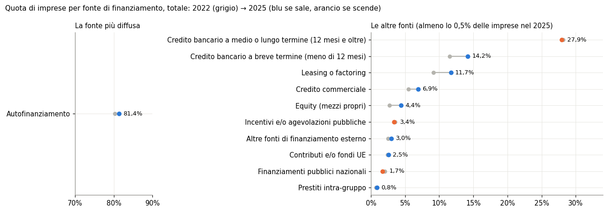
In parole semplici: 11 fonti superano lo 0,5% delle imprese nel 2025. L’autofinanziamento ha una scala a parte; fra le altre il credito bancario a medio-lungo termine resta la seconda fonte, ma il passo avanti più lungo è del credito a breve e di leasing e factoring.
Commento. Il grafico riporta le fonti usate da almeno lo 0,5% delle imprese nel 2025. L’autofinanziamento sta in un pannello a parte perché la sua scala, intorno all’80%, schiaccerebbe tutte le altre. Il punto grigio è il 2022, quello colorato il 2025: blu se la quota sale, arancione se scende.
I segmenti più lunghi sono quelli del credito bancario a breve e di leasing e factoring. Le tre voci arancioni (credito bancario a medio-lungo termine, incentivi pubblici, finanziamenti pubblici nazionali) si muovono di pochi decimi di punto: a questa distanza la differenza fra salire e scendere è più piccola dell’incertezza di una stima campionaria.
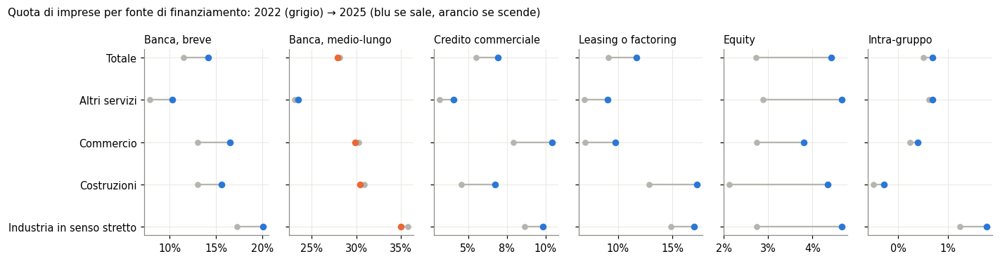
In parole semplici: salgono in tutti i macrosettori: banca, breve, credito commerciale, leasing o factoring, equity, intra-gruppo. Il credito bancario a medio-lungo termine varia fra -0,8 e 0,4 punti.
Commento. Lo stesso confronto per macrosettore mostra che i movimenti non vengono da un solo settore. Il credito bancario a breve sale ovunque: industria in senso stretto dal 17,3 al 20,1%, commercio dal 13,0 al 16,5%, costruzioni dal 13,0 al 15,6%, altri servizi dal 7,9 al 10,3%. Il credito commerciale sale in tutti e quattro (nel commercio dal 7,9 al 10,5%), e così leasing e factoring, equity e prestiti infragruppo.
Il credito a medio-lungo termine è quasi fermo: cala di pochi decimi in industria, costruzioni e commercio e cresce di 0,3 punti negli altri servizi. L’industria in senso stretto resta il macrosettore più legato al credito bancario, gli altri servizi il meno legato; le costruzioni raddoppiano la quota di imprese che usa l’equity (dal 2,1 al 4,3%). I prestiti infragruppo restano sotto l’1,5% ovunque, perché riguardano soprattutto le imprese che appartengono a un gruppo.
3. Per classe di addetti
Le stesse quote per classe di addetti, totale dei settori.
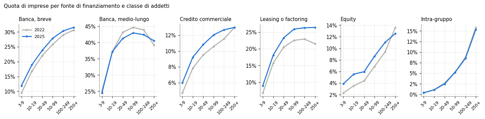
| classe di addetti | Banca, breve | Banca, medio-lungo | Credito commerciale | Leasing o factoring | Equity | Intra-gruppo |
|---|---|---|---|---|---|---|
| 3-9 | +2.5 | -0.6 | +1.3 | +2.2 | +1.6 | +0.1 |
| 10-19 | +2.2 | -0.1 | +1.4 | +2.3 | +2.0 | -0.0 |
| 20-49 | +1.7 | -1.9 | +1.3 | +2.8 | +1.6 | -0.2 |
| 50-99 | +2.1 | -1.7 | +1.5 | +3.4 | +1.8 | -0.1 |
| 100-249 | +1.3 | -1.5 | +1.1 | +3.4 | +1.6 | -0.3 |
| 250 e oltre | +0.9 | +1.3 | +0.0 | +4.9 | -1.0 | -0.5 |
In parole semplici: nel grafico, i livelli 2025: usa il credito bancario a breve il 31,5% delle imprese con 250 addetti e oltre, contro 11,9% delle microimprese. Nella tabella, la variazione 2022-2025 in punti: il credito a breve cresce di più fra le microimprese (2,5) che fra le grandi (0,9); leasing e factoring al contrario (2,2 contro 4,9).
Commento. Per classe di addetti la diffusione delle fonti esterne cresce con la dimensione. Nel 2025 usa il credito bancario a breve l’11,9% delle microimprese e il 31,5% delle imprese con 250 addetti e oltre; i prestiti infragruppo vanno dallo 0,4 al 15,4%. Il credito a medio-lungo termine fa eccezione: tocca il massimo fra 50 e 99 addetti (43,0%) e scende fra le imprese più grandi (40,6%).
La tabella sotto il grafico risponde alla domanda lasciata aperta nella sezione 1. L’aumento del credito a breve c’è in ogni classe, da +0,9 punti fra le grandi a +2,5 fra le microimprese: non è solo un effetto della composizione. Leasing e factoring crescono invece di più fra le grandi (+4,9 punti contro +2,2). Le imprese con 250 addetti e oltre sono l’unica classe in cui l’equity cala (−1,0 punti) e il credito a medio-lungo termine sale (+1,3).
4. Perché le imprese ricorrono al finanziamento esterno
Quota sulle imprese che hanno fatto ricorso a finanziamenti esterni (risposta multipla).
| motivo | % 2022 | % 2025 | diff. punti |
|---|---|---|---|
| Esigenze di liquidità e/o capitale liquido | 43.1 | 39.0 | -4.1 |
| Attività ordinaria (es: personale, spese correnti, ecc.) | 37.5 | 37.0 | -0.5 |
| Investimenti per l’ampliamento della capacità produttiva | 29.8 | 33.2 | 3.3 |
| Altro motivo | 20.3 | 22.5 | 2.2 |
| Investimenti in nuove tecnologie di tipo digitale | 8.9 | 7.5 | -1.4 |
| Investimenti per implementare misure finalizzate alla sostenibilità ambientale | nan | 3.8 | nan |
| Investimenti in nuove tecnologie di tipo non digitale (es: tecnologie green) | 2.4 | 2.8 | 0.4 |
| Internazionalizzazione | 1.3 | 1.4 | 0.1 |
| Partecipazione (anche azionaria) in altre imprese | 0.6 | 0.8 | 0.3 |
| Investimenti per implementare misure finalizzate alla responsabilità sociale ed ambientale | 1.3 | nan | nan |
In parole semplici: ricorrono a finanziamenti esterni 459.615 imprese nel 2025 (45,7% dell’universo; 44,1% nel 2022). Il bisogno di liquidità resta il primo motivo ma scende; sale l’ampliamento della capacità produttiva.
Commento. Qui il denominatore cambia: sono le imprese che hanno fatto ricorso a finanziamenti esterni, 459.615 nel 2025, cioè il 45,7% dell’universo (44,1% nel 2022). Anche questa domanda ammette più risposte.
I tre motivi principali restano gli stessi. Le esigenze di liquidità scendono dal 43,1 al 39,0%, l’attività ordinaria (personale, spese correnti) è stabile intorno al 37%, l’ampliamento della capacità produttiva sale dal 29,8 al 33,2%. Fra gli investimenti specifici, le nuove tecnologie digitali scendono dall’8,9 al 7,5%, quelle non digitali salgono dal 2,4 al 2,8%.
Il quadro è di un credito esterno meno legato al bisogno di cassa e un po’ più agli investimenti in capacità. Nel comunicato Istat aggiunge che le imprese piccole ricorrono al credito esterno soprattutto per l’attività corrente, quelle grandi per investire. La voce sulla sostenibilità ambientale (2025) e quella sulla responsabilità sociale e ambientale (2022) sono domande diverse e non si confrontano.
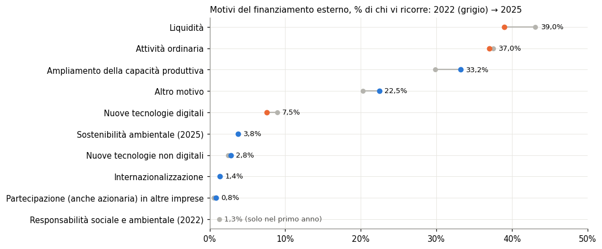
In parole semplici: i tre motivi principali restano liquidità, attività ordinaria e ampliamento della capacità produttiva; fra il 2022 e il 2025 i primi due perdono terreno e il terzo ne guadagna. Le misure di sostenibilità ambientale (2025) e di responsabilità sociale e ambientale (2022) sono domande diverse: un solo punto ciascuna.
Commento. Il grafico ordina i motivi per la quota del 2025. Le due voci arancioni in alto (liquidità e attività ordinaria) indicano un ricorso al credito meno legato alla gestione corrente; il segmento blu dell’ampliamento della capacità produttiva è il movimento opposto. Le voci in fondo riguardano pochi punti percentuali: internazionalizzazione e partecipazioni in altre imprese restano sotto il 2% di chi ricorre al credito esterno.
5. Prestiti richiesti e ottenuti
Quota di imprese che ha chiesto un prestito a banche o altri intermediari e, fra queste, esito della richiesta. Nel 2022 la tavola riportava anche se il prestito era assistito da garanzia pubblica; nell’edizione 2025 quella domanda non c’è più.
| anno | richiesto prestito % imprese | Sì, per l’ammontare richiesto % richiedenti | Sì, ma per ammontare inferiore % richiedenti | Esito non ancora noto % richiedenti | No % richiedenti |
|---|---|---|---|---|---|
| 2022 | 24.0 | 84.4 | 9.5 | 2.6 | 3.5 |
| 2025 | 23.8 | 85.6 | 8.2 | 3.9 | 2.4 |
In parole semplici: la quota di imprese che chiede un prestito passa da 24,0 a 23,8%. Fra chi lo chiede, nel 2025 lo ottiene per l’intero importo l’85,6%; i rifiuti sono 2,4% (3,5% nel 2022).
Commento. La quota di imprese che ha chiesto un prestito a banche o altri intermediari è stabile: 24,0% nel 2022, 23,8% nel 2025. Fra chi l’ha chiesto, la quota che lo ottiene per l’intero importo sale dall’84,4 all’85,6%, quella che lo ottiene per un importo inferiore scende dal 9,5 all’8,2%, i rifiuti scendono dal 3,5 al 2,4%.
Due cautele. L’esito non ancora noto sale dal 2,6 al 3,9%: una parte delle richieste del 2025 era ancora in istruttoria e il suo esito finale non è nella tavola. La base delle percentuali sull’esito sono le imprese che hanno chiesto un prestito, come nella figura 25 del comunicato; nel testo del comunicato il 2,4% di rifiuti è riferito invece alle imprese con almeno 3 addetti. Sul totale delle imprese i rifiuti sarebbero circa lo 0,6%.
Secondo Istat, tre imprese su quattro non hanno chiesto prestiti e l’80,3% di queste non ne aveva bisogno (77% nel 2022).
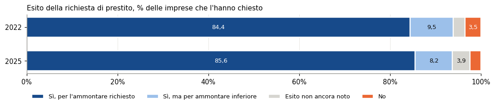
In parole semplici: ogni barra è il 100% delle imprese che hanno chiesto un prestito. La parte scura (prestito concesso per intero) copre quasi tutta la barra in entrambi gli anni; la parte arancione (rifiutato) è sottile e si assottiglia nel 2025.
Commento. Ogni barra è il 100% delle imprese che hanno chiesto un prestito. La parte scura, il prestito concesso per intero, occupa più dell’84% in entrambi gli anni. La differenza fra le due barre sta nelle code: si accorcia la parte concessa per un importo inferiore, si allunga quella con esito non ancora noto, si assottiglia quella dei rifiuti.
| classe di addetti | Sì, completamente | Sì, parzialmente | No | con garanzia (totale o parziale) |
|---|---|---|---|---|
| 3-9 | 19.4 | 27.3 | 53.2 | 46.8 |
| 10-19 | 14.5 | 37.4 | 48.1 | 51.9 |
| 20-49 | 14.1 | 41.6 | 44.3 | 55.7 |
| 50-99 | 12.1 | 42.7 | 45.2 | 54.8 |
| 100-249 | 9.8 | 39.4 | 50.8 | 49.2 |
| 250 e oltre | 7.3 | 26.5 | 66.2 | 33.8 |
| Totale | 17.6 | 31.1 | 51.3 | 48.7 |
In parole semplici: solo edizione 2022. Fra le imprese che hanno chiesto un prestito, il 48,7% lo ha avuto assistito in tutto o in parte da garanzia pubblica; la quota più alta è fra 20-49 addetti (55,7%), la più bassa fra 250 e oltre addetti (33,8%). È il dato che si collega al Fondo di garanzia per le PMI; l’edizione 2025 non permette di aggiornarlo.
Commento. Solo l’edizione 2022 chiedeva se il prestito era assistito da una garanzia pubblica. Fra le imprese con almeno 3 addetti che avevano chiesto un prestito, il 48,7% aveva una garanzia pubblica: completa per il 17,6%, parziale per il 31,1%. Le tre colonne sommano al 100% delle imprese che hanno chiesto un prestito, comprese quelle che non l’hanno ottenuto.
La forma della garanzia cambia con la dimensione. La garanzia completa è più frequente fra le microimprese (19,4%) e scende fino al 7,3% fra le imprese con 250 addetti e oltre. La garanzia parziale prevale fra 10 e 249 addetti, con un massimo del 42,7% fra 50 e 99. Nel complesso la quota garantita più alta è fra 20 e 49 addetti (55,7%), la più bassa fra le imprese più grandi (33,8%).
È il dato della Rilevazione che si collega al Fondo di garanzia per le PMI. L’edizione 2025 non ripete la domanda: non si può dire da questa fonte se la quota di prestiti garantiti sia cresciuta o calata.
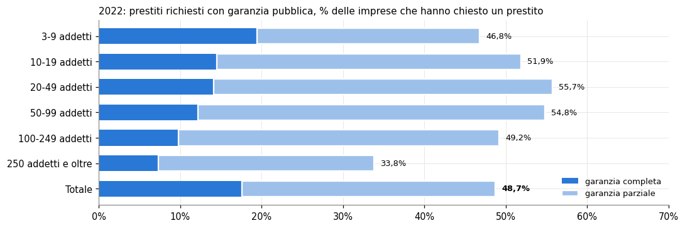
In parole semplici: la garanzia completa (blu scuro) pesa di più fra le microimprese, quella parziale (azzurro) fra le imprese da 10 a 249 addetti; fra le imprese con 250 addetti e oltre entrambe sono più rare.
Commento. Il grafico separa la garanzia completa (blu) da quella parziale (azzurro). La lunghezza totale della barra disegna una curva: sale dalle microimprese fino alla classe 20-49 e poi scende, con un calo netto fra le imprese con 250 addetti e oltre. Il blu invece si accorcia con continuità al crescere della dimensione: più l’impresa è piccola, più spesso la garanzia copre tutto il prestito.
6. Ricapitalizzazione (solo 2025)
Le tavole 45-48 sono nuove nell’edizione 2025 e riguardano le sole società di capitali.
| classe di addetti | attuato % società | Sì, con l’apporto di capitale privato di fondi di private equity o IPOs | Sì, con l’apporto di capitale dei soci | Sì, con l’apporto di capitale privato di nuovi soci | Sì, con il sostegno di incentivi pubblici o contributi | No |
|---|---|---|---|---|---|---|
| 3-9 | 9.1 | 0.5 | 5.2 | 1.0 | 2.4 | 90.9 |
| 10-19 | 10.8 | 0.8 | 5.9 | 0.9 | 3.1 | 89.2 |
| 20-49 | 10.6 | 0.8 | 5.8 | 1.1 | 2.9 | 89.4 |
| 50-99 | 11.5 | 1.2 | 6.3 | 1.3 | 2.6 | 88.5 |
| 100-249 | 10.1 | 1.3 | 6.1 | 1.1 | 1.6 | 89.9 |
| 250 e oltre | 11.1 | 1.7 | 6.8 | 1.4 | 1.2 | 88.9 |
| Totale | 9.7 | 0.6 | 5.5 | 1.0 | 2.6 | 90.3 |
In parole semplici: il 9,7% delle società di capitali prevede una ricapitalizzazione; il canale principale è il capitale dei soci (5,5 punti, poco più della metà), poi gli incentivi pubblici. Private equity e quotazione restano marginali anche fra le società con 250 addetti e oltre (1,7%).
Commento. Le tavole sulla ricapitalizzazione sono nuove nell’edizione 2025 e riguardano solo le società di capitali con almeno 3 addetti, circa 482mila. Il 9,7%, quasi 47mila società, ha attuato o prevede una ricapitalizzazione.
Il canale prevalente è il capitale dei soci (5,5% delle società), seguito dagli incentivi pubblici o contributi (2,6%), dai nuovi soci (1,0%) e dai fondi di private equity o dalla quotazione (0,6%). La quota che si ricapitalizza varia poco con la dimensione, dal 9,1% delle microimprese all’11,5% della classe 50-99. Cambia invece il canale: il capitale dei soci sale dal 5,2 al 6,8% andando dalle micro alle grandi, private equity e quotazione dallo 0,5 all’1,7%, mentre gli incentivi pubblici toccano il massimo fra 10 e 19 addetti (3,1%) e scendono all’1,2% fra le grandi.
Nel comunicato Istat segnala una propensione più alta nel Mezzogiorno (12,0%).
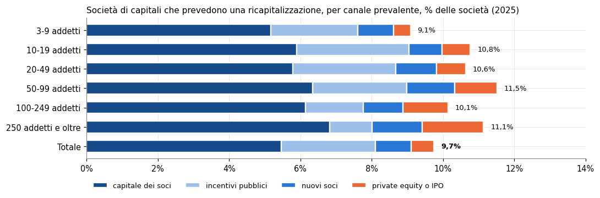
In parole semplici: la barra intera è la quota di società che prevede una ricapitalizzazione: circa una su dieci in ogni classe. Il blu scuro (capitale dei soci) è sempre la parte più lunga; l’arancione (private equity o quotazione) si allunga con la dimensione ma resta sotto il 2%.
Commento. La barra intera è la quota di società che prevede una ricapitalizzazione, quasi la stessa in ogni classe: circa una su dieci. La parte blu scura, il capitale dei soci, è sempre la più lunga. La parte arancione, private equity o quotazione, si allunga con la dimensione ma resta sotto il 2% anche fra le società con 250 addetti e oltre. L’azzurro degli incentivi pubblici si accorcia nelle classi più grandi: le imprese che ne fanno il canale prevalente sono soprattutto piccole.
| classe di addetti | Mantenere inalterato l’assetto proprietario | Impossibilità da parte dei soci a conferire nuovi capitali | Difficoltà di accesso a capitale esterno (pubblico o privato) | Mancanza di adeguati incentivi | Non erano previsti piani di espansione o investimento di dimensione rilevante | Altro motivo |
|---|---|---|---|---|---|---|
| 3-9 | 48.2 | 7.8 | 2.2 | 4.3 | 33.1 | 20.1 |
| 10-19 | 52.6 | 6.3 | 1.4 | 2.9 | 28.8 | 21.0 |
| 20-49 | 53.5 | 4.7 | 1.1 | 2.0 | 26.9 | 23.3 |
| 50-99 | 53.7 | 3.2 | 0.9 | 1.3 | 24.4 | 26.3 |
| 100-249 | 51.7 | 2.3 | 0.6 | 1.0 | 22.7 | 30.6 |
| 250 e oltre | 47.4 | 1.2 | 0.5 | 0.6 | 19.8 | 39.4 |
| Totale | 50.0 | 6.9 | 1.8 | 3.5 | 30.9 | 21.2 |
In parole semplici: chi non si ricapitalizza lo fa soprattutto per scelta (non cambiare l’assetto proprietario, nessun piano di investimento rilevante), meno per vincoli (soci senza capitali, accesso difficile al capitale esterno).
Commento. La tabella riguarda le società di capitali che non prevedono una ricapitalizzazione, circa 435mila, con risposta multipla. La metà indica la volontà di mantenere invariato l’assetto proprietario (50,0%), quasi una su tre l’assenza di piani di espansione o investimento rilevanti (30,9%). I vincoli pesano poco: soci senza capitali da conferire 6,9%, incentivi inadeguati 3,5%, accesso difficile al capitale esterno 1,8%.
Con la dimensione i vincoli si riducono. L’impossibilità dei soci di conferire capitale passa dal 7,8% delle microimprese all’1,2% delle grandi; anche la mancanza di piani di investimento scende, dal 33,1 al 19,8%. L’assetto proprietario resta intorno alla metà in tutte le classi, fra il 47,4 e il 53,7%. Cresce invece con la dimensione l’«altro motivo», dal 20,1 al 39,4%: fra le società più grandi quattro su dieci indicano un motivo che il questionario non prevede.
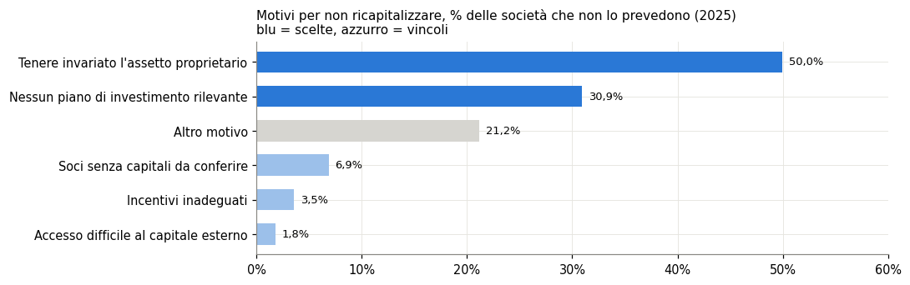
In parole semplici: le due barre blu (scelte) sommano 80,9 punti, le tre azzurre (vincoli) 12,2; la risposta è multipla, quindi le somme possono superare 100.
Commento. Il grafico separa le scelte (blu) dai vincoli (azzurro); l’«altro motivo» è in grigio perché non si sa a quale gruppo appartenga. Le due scelte sommano 80,9 punti, i tre vincoli 12,2. Poiché la risposta è multipla, le due somme non dicono quante società indicano almeno una scelta o almeno un vincolo, ma il rapporto fra le due resta netto.
7. Confronto con BACH per macrosettore
BACH Italia, società non finanziarie, campione variabile, tutte le classi: voci del passivo in % del totale attivo. I macrosettori della Rilevazione si ricompongono dalle sezioni BACH, ponderando per il totale attivo. Industria in senso stretto = B-E; Costruzioni = F; Commercio = G; Altri servizi = H, I, J, L, M (senza sedi centrali), N, R, divisioni S95 e S96. Mancano in BACH le sezioni P (istruzione) e Q (sanità), presenti nella Rilevazione.
Totale ricomposto contro Zc (totale BACH), debiti bancari a breve 2024: 6,28% contro 6,27%.
| voce | macrosettore | Istat % imprese 2022 | Istat 2025 | BACH % attivo 2022 | BACH 2024 | stessa direzione |
|---|---|---|---|---|---|---|
| Banca, breve | Industria in senso stretto | 17.3 | 20.1 | 5.3 | 4.8 | no |
| Banca, breve | Costruzioni | 13.0 | 15.6 | 4.7 | 4.2 | no |
| Banca, breve | Commercio | 13.0 | 16.5 | 6.2 | 5.9 | no |
| Banca, breve | Altri servizi | 7.9 | 10.3 | 11.8 | 9.6 | no |
| Banca, breve | Totale | 11.5 | 14.2 | 7.2 | 6.3 | no |
| Banca, medio-lungo | Industria in senso stretto | 35.7 | 35.0 | 7.1 | 6.1 | sì |
| Banca, medio-lungo | Costruzioni | 30.9 | 30.4 | 8.0 | 7.1 | sì |
| Banca, medio-lungo | Commercio | 30.2 | 29.9 | 5.9 | 4.9 | sì |
| Banca, medio-lungo | Altri servizi | 23.1 | 23.4 | 6.3 | 5.5 | no |
| Banca, medio-lungo | Totale | 28.1 | 27.9 | 6.8 | 5.8 | sì |
| Credito commerciale | Industria in senso stretto | 8.6 | 9.8 | 18.8 | 16.9 | no |
| Credito commerciale | Costruzioni | 4.6 | 6.7 | 20.1 | 20.7 | sì |
| Credito commerciale | Commercio | 7.9 | 10.5 | 26.2 | 25.9 | no |
| Credito commerciale | Altri servizi | 3.1 | 4.1 | 12.2 | 11.3 | no |
| Credito commerciale | Totale | 5.5 | 6.9 | 18.4 | 17.1 | no |
| Equity | Industria in senso stretto | 2.7 | 4.7 | 39.5 | 42.2 | sì |
| Equity | Costruzioni | 2.1 | 4.3 | 27.4 | 30.4 | sì |
| Equity | Commercio | 2.7 | 3.8 | 35.2 | 37.4 | sì |
| Equity | Altri servizi | 2.9 | 4.7 | 31.1 | 33.5 | sì |
| Equity | Totale | 2.7 | 4.4 | 35.6 | 38.1 | sì |
| Intra-gruppo | Industria in senso stretto | 1.1 | 1.4 | 11.2 | 10.4 | no |
| Intra-gruppo | Costruzioni | 0.3 | 0.4 | 8.9 | 8.5 | no |
| Intra-gruppo | Commercio | 0.6 | 0.7 | 7.7 | 7.8 | sì |
| Intra-gruppo | Altri servizi | 0.8 | 0.8 | 15.5 | 17.1 | sì |
| Intra-gruppo | Totale | 0.8 | 0.8 | 11.6 | 11.7 | sì |
In parole semplici: in 13 casi su 25 le due fonti si muovono nella stessa direzione; per voce: banca, breve 0 su 5; banca, medio-lungo 4 su 5; credito commerciale 1 su 5; equity 5 su 5; intra-gruppo 3 su 5. L’equity concorda ovunque. Il credito bancario a breve diverge ovunque: più imprese lo usano, ma pesa meno nei bilanci BACH.
Per capire se la divergenza dipende dal peso delle grandi imprese nella media ponderata, la distribuzione BACH del debito bancario a breve (totale Zc). La mediana è 0,00%: più di metà delle società non ha debiti bancari a breve, quindi la mediana non è informativa. Il terzo quartile passa da 0,91% (2022) a 0,81% (2024), la media ponderata da 7,13 a 6,27%. Scende anche il terzo quartile: la divergenza non viene solo dalle grandi imprese; resta la differenza fra «usare» una fonte, anche per un importo piccolo, e il suo peso sul totale attivo.
Commento. La tabella accosta, per ogni voce e macrosettore, la quota di imprese che usa la fonte (Istat, 2022 e 2025) e il peso della voce corrispondente nel bilancio delle società non finanziarie (BACH, 2022 e 2024, in % del totale attivo). Il raccordo fra le voci è: credito bancario a breve con i debiti verso banche entro 12 mesi (L21), a medio-lungo con quelli oltre 12 mesi (L22), credito commerciale con i debiti verso fornitori (L4), equity con il patrimonio netto (E), prestiti infragruppo con gli altri debiti finanziari (L31).
Le due fonti vanno nella stessa direzione in 13 casi su 25. L’equity concorda in tutti i macrosettori: più imprese usano i mezzi propri e il patrimonio netto pesa di più sull’attivo (dal 35,6 al 38,1% nel totale). Il credito bancario a medio-lungo concorda in quattro casi su cinque; fa eccezione negli altri servizi, dove la quota Istat sale di 0,3 punti e il peso BACH scende. Il credito commerciale concorda solo nelle costruzioni.
Il credito bancario a breve non concorda in nessun macrosettore: più imprese lo usano, ma pesa meno nei bilanci (dal 7,2 al 6,3% dell’attivo nel totale ricomposto). Il paragrafo sotto la tabella mostra che scende anche il terzo quartile BACH, quindi la divergenza non viene solo dalle imprese grandi. Una lettura compatibile, da verificare, è che più imprese usino un fido per importi piccoli rispetto all’attivo. Restano le differenze di metodo: anni diversi (BACH arriva al 2024), unità diverse (imprese contro bilanci), universi diversi (la Rilevazione comprende imprese individuali e società di persone).
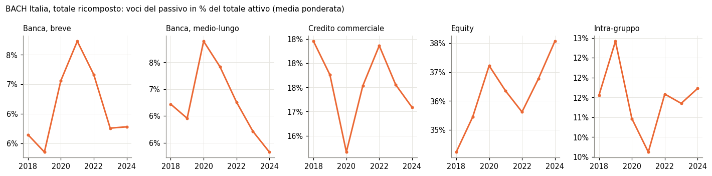
| anno | Banca, breve | Banca, medio-lungo | Credito commerciale | Equity | Intra-gruppo |
|---|---|---|---|---|---|
| 2018 | 6.1 | 6.7 | 18.5 | 34.2 | 11.6 |
| 2021 | 7.7 | 7.4 | 17.5 | 36.3 | 10.1 |
| 2024 | 6.3 | 5.8 | 17.1 | 38.1 | 11.7 |
In parole semplici: la tabella riporta le stesse serie per il 2018, 2021 e 2024. Fra il 2021 e il 2024: banca, breve 7,7 → 6,3%; banca, medio-lungo 7,4 → 5,8%; credito commerciale 17,5 → 17,1%; equity 36,3 → 38,1%; intra-gruppo 10,1 → 11,7%.
Commento. Le serie BACH coprono il 2018-2024 per il totale ricomposto delle società non finanziarie. Il debito bancario, a breve e a medio-lungo, sale dal 2019 al 2021 (nel 2021 a breve 7,7%, a medio-lungo 7,4% dell’attivo) e poi scende fino al 2024 (6,3 e 5,8%). Il patrimonio netto cresce per tutto il periodo, dal 34,2% del 2018 al 38,1% del 2024; i debiti verso fornitori calano leggermente (dal 18,5 al 17,1%); gli altri debiti finanziari, soprattutto infragruppo, tornano nel 2024 al livello del 2018 (11,7%).
Il picco del 2021 è compatibile con i prestiti garantiti del periodo pandemico, ma è un’ipotesi: il notebook non scompone il debito per tipo di prestito. Il 2022, anno della seconda edizione della Rilevazione, cade già nella fase di discesa.
8. Confronto con BACH per divisione
Per ogni divisione Ateco presente in entrambe le fonti: quota di imprese che usa la fonte (Istat 2025) contro peso della voce nel bilancio (BACH 2024), come media ponderata e come terzo quartile. La mediana BACH non serve: per i debiti bancari è zero nella grande maggioranza delle divisioni (più di metà delle società non ne ha). Se le due fonti descrivono lo stesso fenomeno, le divisioni in cui più imprese usano il credito bancario dovrebbero essere anche quelle con più debito bancario in bilancio.
| voce | statistica BACH | divisioni | Spearman |
|---|---|---|---|
| Banca, breve | media ponderata | 71 | 0.46 |
| Banca, breve | terzo quartile | 71 | 0.81 |
| Banca, medio-lungo | media ponderata | 71 | 0.32 |
| Banca, medio-lungo | terzo quartile | 71 | 0.77 |
| Credito commerciale | media ponderata | 71 | 0.45 |
| Credito commerciale | terzo quartile | 71 | 0.61 |
| Equity | media ponderata | 71 | 0.06 |
| Equity | terzo quartile | 71 | 0.28 |
| Intra-gruppo | media ponderata | 71 | 0.36 |
| Intra-gruppo | terzo quartile | 71 | 0.47 |
In parole semplici: 71 divisioni in comune. Un indice di Spearman vicino a 1 vuol dire che l’ordine delle divisioni è lo stesso nelle due fonti, vicino a 0 che non c’è relazione. Il legame più forte è per banca, breve (terzo quartile, 0,81); per l’equity è debole (0,28 al massimo): usare l’aumento di capitale come fonte nell’anno non dice quanto patrimonio netto ha già l’impresa. Divisioni con mediana BACH pari a zero: banca, breve 64; banca, medio-lungo 68; credito commerciale 20; equity 0; intra-gruppo 69.
Commento. Il confronto per divisione Ateco guarda la sezione trasversale: in quali settori una fonte è più diffusa e in quali pesa di più nei bilanci. L’indice di Spearman misura quanto le due fonti ordinano le 71 divisioni comuni nello stesso modo.
Con il terzo quartile BACH il legame è forte per il credito bancario a breve (0,81) e a medio-lungo (0,77), buono per il credito commerciale (0,61), più debole per l’intra-gruppo (0,47) e per l’equity (0,28). Con la media ponderata i valori sono più bassi, perché la media riflette le poche società grandi di ogni divisione mentre la Rilevazione conta le imprese. La mediana non si usa: per i debiti bancari è zero nella grande maggioranza delle divisioni.
Il risultato completa quello della sezione 7. Le due fonti concordano su dove si usa il credito bancario, non su come cambia nel tempo. Per l’equity il legame debole ha una spiegazione semplice: la Rilevazione chiede se l’impresa ha usato i mezzi propri come fonte nell’anno, BACH misura il patrimonio netto accumulato.
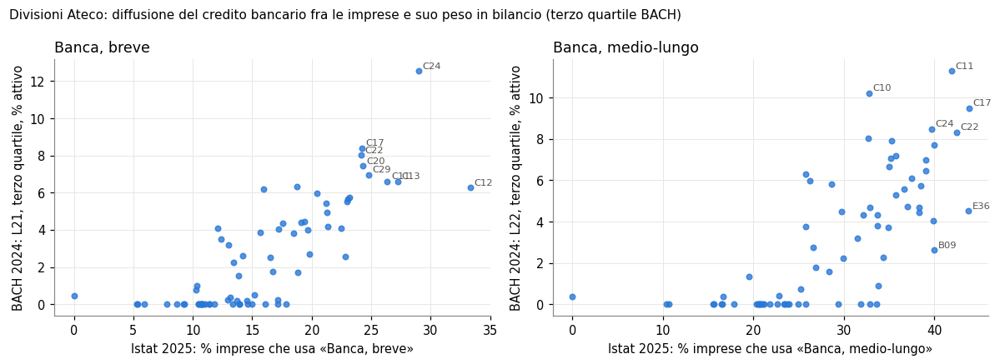
In parole semplici: ogni punto è una divisione. Se la nuvola sale verso destra, le divisioni in cui più imprese usano il credito bancario sono anche quelle in cui le società più indebitate con le banche (terzo quartile) hanno più debito bancario in bilancio.
Commento. Ogni punto è una divisione Ateco. Le nuvole salgono verso destra: le divisioni in cui più imprese usano il credito bancario sono quelle in cui le società più indebitate con le banche hanno più debito in bilancio. Le divisioni manifatturiere ad alta intensità di capitale, come la metallurgia (C24) per il breve e le bevande (C11) per il medio-lungo, stanno in alto a destra.
Alcuni punti estremi dipendono da divisioni con pochissime imprese. L’industria del tabacco (C12) ha 6 imprese nella Rilevazione e un terzo di esse usa il credito a breve; l’estrazione di petrolio e gas (B06) ne ha circa 7, nessuna con credito a breve. Su numeri così piccoli una sola risposta sposta la quota di molti punti: il legame si legge sull’insieme, non sui singoli punti.
Istat, Censimento permanente delle imprese - Rilevazione multiscopo, Appendice statistica (edizioni 2022 e 2025). — BACH database: ECCBSO, Oesterreichische Nationalbank, National Bank of Belgium, Deutsche Bundesbank, Banco de España, Banque de France, Hrvatska Narodna Banka, Magyar Nemzeti Bank, Centrale dei Bilanci - Cerved srl / Banca d’Italia, Statec Luxembourg, Narodowy Bank Polski (calculations of Narodowy Bank Polski on the basis of the data from the Statistics Poland), Banco de Portugal, National Bank of Slovakia (calculations based on data from the Ministry of Finance). Rilascio BACH 20260914.
9. Credito e innovazione per divisione
L’esito delle domande di prestito dice come rispondono le banche a chi chiede credito; non dice se il credito va a chi innova. La stessa Rilevazione 2025 contiene le altre domande: attività di innovazione, ricerca e sviluppo, intensità degli investimenti in tecnologie e digitalizzazione, intelligenza artificiale, cloud, nuovi prodotti, accordi formali con altre imprese, competenze digitali. Le tavole pubblicate le riportano per divisione Ateco, non per impresa: l’incrocio si fa fra divisioni.
Per ogni divisione con almeno 1.000 imprese si calcolano tre indicatori di credito e otto di innovazione, tutti in quota di imprese. L’indice di Spearman misura se le divisioni si ordinano allo stesso modo. Le divisioni con imprese più grandi chiedono più credito e innovano di più: la colonna «al netto della dimensione» toglie l’effetto della quota di imprese con almeno 10 addetti (correlazione parziale sui ranghi).
| indicatore di innovazione | prestito | prestito, al netto della dimensione | ridotto/negato | ridotto/negato, al netto della dimensione | credito per digitale | credito per digitale, al netto della dimensione |
|---|---|---|---|---|---|---|
| attività di innovazione | 0.29 | -0.03 | -0.26 | -0.24 | 0.79 | 0.82 |
| R&S interna | 0.36 | -0.09 | -0.14 | -0.10 | 0.60 | 0.66 |
| investimenti in tecnologie e digitalizzazione, intensità alta o media | 0.21 | -0.03 | -0.30 | -0.28 | 0.88 | 0.90 |
| almeno una tecnologia IA | -0.08 | -0.21 | -0.23 | -0.22 | 0.66 | 0.66 |
| servizi cloud | -0.05 | -0.25 | -0.31 | -0.30 | 0.62 | 0.61 |
| nuovi beni o servizi (trasformazione innovativa) | 0.25 | -0.00 | -0.22 | -0.19 | 0.72 | 0.73 |
| accordi formali con altre imprese | 0.15 | -0.04 | -0.10 | -0.08 | 0.11 | 0.09 |
| competenze digitali avanzate (imprese con 10+ addetti) | -0.03 | -0.09 | -0.33 | -0.32 | 0.75 | 0.75 |
Divisioni: 59 (almeno 1.000 imprese con 3 addetti e oltre). Con questo numero di divisioni un indice sotto 0,26 in valore assoluto non si distingue da zero (soglia approssimata 2/√n).
In parole semplici: le divisioni in cui più imprese chiedono un prestito innovano poco più delle altre (indice da -0,08 a 0,36), e il legame sparisce o si inverte quando si tiene conto della dimensione delle imprese (da -0,25 a -0,00). Dove si innova di più, i prestiti ridotti o negati sono un po’ meno frequenti: il segno è negativo per tutti gli indicatori, ma supera la soglia solo in 3 casi su 8 al netto della dimensione. L’ultima coppia di colonne è alta quasi per costruzione: chi usa il credito esterno per investimenti digitali sta già innovando.
Commento. La tabella accosta, divisione per divisione, quanto le imprese usano il credito e quanto innovano. Prima colonna di ogni coppia: correlazione semplice fra i ranghi; seconda: la stessa al netto della quota di imprese con almeno 10 addetti.
Chiedere un prestito e innovare vanno insieme solo in apparenza. L’indice semplice arriva a 0,36 per la ricerca e sviluppo interna e a 0,29 per le attività di innovazione, ma al netto della dimensione scende fra −0,25 e 0,00. Le divisioni con imprese più grandi chiedono più prestiti e innovano di più; a parità di dimensione la domanda di credito non dice quanto si innova. Per intelligenza artificiale e cloud il segno al netto della dimensione è anzi negativo (−0,21 e −0,25): sono tecnologie diffuse nei servizi, dove il prestito bancario si chiede meno.
L’esito della richiesta segue un altro schema. La quota di prestiti ridotti o negati è più bassa dove si innova di più per tutti e otto gli indicatori, e resta tale al netto della dimensione. Il legame però è debole: supera la soglia di circa 0,26 per le attività di innovazione, gli investimenti in tecnologie, il cloud e le competenze digitali avanzate, non per la ricerca e sviluppo, l’intelligenza artificiale, i nuovi prodotti e gli accordi formali. Una lettura possibile, non verificabile con queste tavole: le banche razionano meno i settori più innovativi perché vi trovano imprese più solide; oppure le imprese dei settori innovativi chiedono importi che sanno di poter ottenere.
La terza coppia di colonne è alta (0,60-0,90) quasi per costruzione. Chi dichiara di usare il credito esterno per investimenti digitali è già un’impresa che innova; dice però che, dove il credito finanzia la trasformazione digitale, questa avviene nei settori già più innovativi. Gli accordi formali con altre imprese non si legano a nessuno dei tre indicatori di credito.
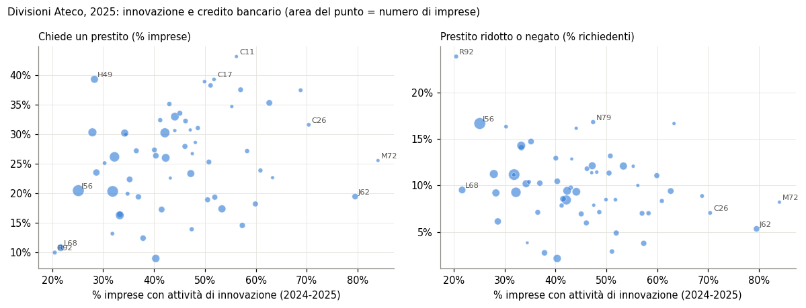
In parole semplici: ogni punto è una divisione. A sinistra la nuvola sale appena: chiedere un prestito è comune sia dove si innova poco sia dove si innova molto. A destra scende di poco: dove più imprese innovano, le richieste ridotte o respinte sono un po’ meno frequenti, con molta dispersione.
Commento. Il grafico mostra le due relazioni principali della tabella sull’indicatore più ampio, la quota di imprese impegnate in attività di innovazione nel biennio 2024-2025. L’area del punto è il numero di imprese, ma nell’indice di Spearman ogni divisione pesa uno: la ristorazione (I56, 142.594 imprese) conta quanto la ricerca scientifica (M72, 1.488).
Le divisioni più innovative sono la ricerca scientifica (M72, 84%), la produzione di software (J62, 80%) e l’elettronica (C26, 70%); le meno innovative le lotterie, scommesse e case da gioco (R92), le attività immobiliari (L68) e la ristorazione (I56), fra il 20 e il 25%. Agli estremi la differenza nel credito c’è: chiede un prestito il 10-20% delle imprese nelle tre divisioni meno innovative, il 19-32% nelle tre più innovative. In mezzo la dispersione è ampia: fra le divisioni con almeno 1.000 imprese la quota va dal 14% al 38% (decimo e novantesimo percentile) a ogni livello di innovazione, e il software chiede prestiti meno della mediana (19% contro 26%).
Questo incrocio risponde a una domanda limitata: i settori in cui il credito circola di più sono anche quelli che innovano di più? La risposta è «poco, e per lo più per la dimensione delle imprese». Non dice se le singole imprese che ottengono credito innovano, né se il credito produce innovazione: per questo servono dati per impresa.
Istat, Censimento permanente delle imprese - Rilevazione multiscopo, Appendice statistica (edizioni 2022 e 2025). Tavole 12, 14, 32, 36, 38, 42, 44, 60, 63 dell’edizione 2025.
10. Il confronto europeo: CIS 2022 e SAFE
La Rilevazione multiscopo non ha un termine di paragone estero. Due indagini armonizzate lo danno, con universi e periodi diversi.
La Community Innovation Survey 2022 di Eurostat (CIS) riguarda le imprese con almeno 10 addetti e il triennio 2020-2022: per le imprese che innovano dice se hanno cercato debito o capitale di rischio, se lo hanno ottenuto e se lo hanno usato per ricerca e innovazione.
L’indagine BCE sull’accesso al credito delle imprese (Survey on the Access to Finance of Enterprises, SAFE) riguarda le piccole e medie imprese, micro comprese, ed è semestrale: dice per quali scopi le imprese usano la finanza esterna e com’è andata la domanda di prestito.
I tre periodi non coincidono: CIS 2020-2022, anni dei prestiti garantiti per la pandemia; Rilevazione Istat 2025; SAFE dal 2023 al primo semestre 2026.
| imprese innovative, % (CIS 2022) | Italia | UE27 | Germania | Francia | Spagna |
|---|---|---|---|---|---|
| hanno cercato un prestito | 43.9 | n.d. | 30.2 | n.d. | 37.7 |
| … e lo hanno ottenuto (% di chi l’ha cercato) | 96.8 | n.d. | 93.2 | n.d. | 95.3 |
| hanno usato il prestito per R&S o innovazione | 22.7 | 12.5 | 6.8 | 24.0 | 14.4 |
| … (% di chi ha ottenuto un prestito) | 53.4 | 38.0 | 24.0 | 41.4 | 40.1 |
| hanno cercato capitale di rischio | 3.7 | 18.4 | 17.8 | n.d. | 3.8 |
| hanno avuto fondi pubblici per R&S o innovazione | 20.0 | 18.4 | 15.7 | 23.5 | 26.9 |
«n.d.»: dato non pubblicato da Eurostat.
In parole semplici: fra le imprese che innovano, in Italia 22,7 su 100 hanno usato un prestito per innovare, contro 12,5 nella media europea; solo 3,7 su 100 hanno cercato capitale di rischio, contro 18,4. L’innovazione italiana si finanzia con il debito più che con il capitale di soci e investitori.
Commento. La tabella guarda le sole imprese innovative con almeno 10 addetti nel triennio 2020-2022. In Italia il 43,9% ha cercato un prestito, più che in Spagna (37,7%) e in Germania (30,2%), e quasi tutte lo hanno ottenuto (96,8%). Il 22,7% lo ha usato per ricerca e innovazione, contro il 12,5% della media UE e il 6,8% della Germania; solo la Francia è vicina (24,0%). Fra le imprese innovative che hanno ottenuto un prestito, più della metà in Italia lo ha destinato all’innovazione (53,4%, contro 38,0% nella UE).
Il capitale di rischio è l’altro lato: lo ha cercato il 3,7% delle innovative italiane, contro il 18,4% della media UE e il 17,8% della Germania; la Spagna è sul livello italiano (3,8%). I fondi pubblici per ricerca e innovazione sono nella media (20,0% contro 18,4%).
Il triennio è quello dei prestiti garantiti per la pandemia, quando il credito bancario era abbondante e a basso costo: la quota italiana può riflettere quel periodo più che un tratto stabile.
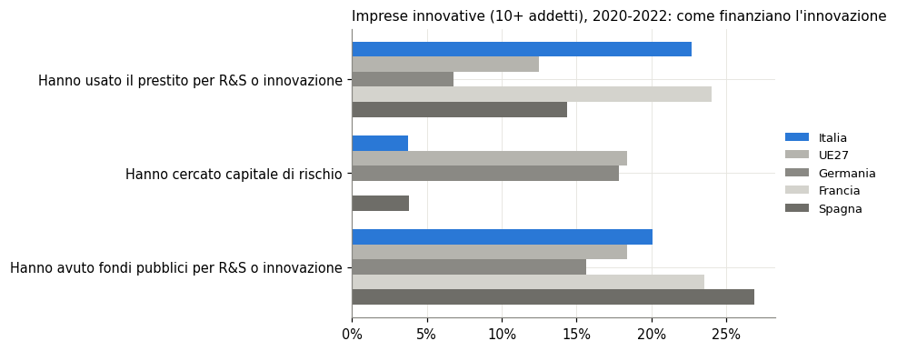
In parole semplici: la barra blu è l’Italia. È fra le più lunghe per il prestito usato per innovare e fra le più corte per il capitale di rischio; per i fondi pubblici è in linea con gli altri paesi.
Commento. Il grafico isola tre righe della tabella. L’Italia sta sopra la media UE per il debito usato per innovare, molto sotto per il capitale di rischio, in media per i fondi pubblici. In Germania il rapporto fra le prime due barre è rovesciato: poco debito per innovare, molto capitale di rischio cercato.
| PMI che hanno usato finanza esterna per…, % (2026-S1) | Italia | Area euro |
|---|---|---|
| investimenti fissi | 34.4 | 36.3 |
| scorte e capitale circolante | 28.8 | 33.2 |
| assunzioni e formazione | 18.3 | 20.6 |
| nuovi prodotti o servizi | 10.7 | 18.1 |
| rifinanziamento di debiti | 2.6 | 12.3 |
In parole semplici: le piccole e medie imprese italiane usano la finanza esterna per gli stessi scopi di quelle dell’area euro, con due eccezioni: la usano poco per rinnovare debiti esistenti e, nell’ultimo semestre, poco per sviluppare nuovi prodotti (10,7% contro 18,1%).
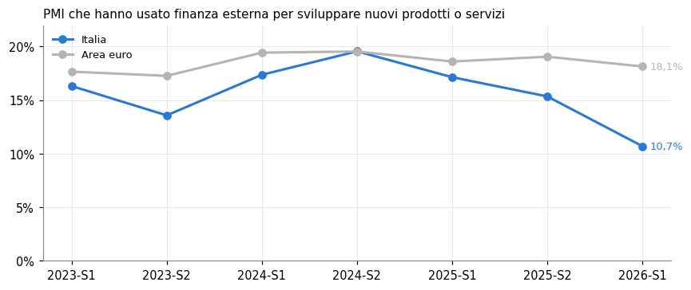
In parole semplici: fino al 2024-S2 la linea italiana resta vicina a quella dell’area euro, poi scende in tre semestri a 10,7%. Il calo è recente e va confermato dalle prossime edizioni.
Commento. La tabella e il grafico riguardano le PMI, micro comprese, e il semestre più recente dell’indagine BCE. Per quasi tutti gli scopi le PMI italiane usano la finanza esterna poco meno di quelle dell’area euro; le differenze grandi sono due. Il rifinanziamento di debiti esistenti è raro in Italia (2,6% contro 12,3%) in tutti i semestri dal 2023. Lo sviluppo di nuovi prodotti o servizi scende al 10,7% contro il 18,1% dell’area euro.
Il calo è recente: fino al secondo semestre 2024 la quota italiana era vicina a quella dell’area euro (19,6% contro 19,5%), poi scende in tre semestri fino al 10,7%. Un solo semestre basso può dipendere dal campione: il dato va riletto con le prossime edizioni dell’indagine.
| PMI che hanno chiesto un prestito bancario, esito, % (2026-S1) | Italia | Area euro |
|---|---|---|
| ottenuto per intero | 84.4 | 68.1 |
| ottenuto in gran parte | 2.7 | 5.8 |
| ottenuto in parte limitata | 5.3 | 4.0 |
| rifiutato dall’impresa per il costo | 1.0 | 2.5 |
| respinto | 0.9 | 7.6 |
| in attesa | 5.7 | 10.6 |
In parole semplici: in Italia chi chiede un prestito in banca lo ottiene per intero più spesso che nel resto dell’area euro (84,4% contro 68,1%) e se lo vede respingere quasi mai (0,9%).
Commento. Fra le PMI che hanno chiesto un prestito bancario, in Italia l’84,4% lo ha ottenuto per intero e lo 0,9% se l’è visto respingere; nell’area euro il 68,1% e il 7,6%. Il quadro è coerente con la Rilevazione Istat 2025 (sezione 5: 85,6% ottenuto per intero, 2,4% negato), che però conta le imprese con almeno 3 addetti di ogni dimensione.
Anche qui il vantaggio italiano è recente. Dal 2023 alla prima metà del 2025 la quota di prestiti ottenuti per intero era fra il 64,5% e il 71,0%, vicina all’area euro; sale all’80,2% e all’84,4% negli ultimi due semestri.
Messa accanto alla tabella precedente, l’indagine BCE dice che oggi le PMI italiane ottengono il credito che chiedono più facilmente delle altre, ma lo usano meno per nuovi prodotti. Il credito non sembra il vincolo all’innovazione; non dice quale sia.
Eurostat, Community Innovation Survey 2022 (inn_cis13_*), imprese con almeno 10 addetti; dataset inn_cis13_fin_ip, inn_cis13_finrd_ip, inn_cis13_pub_ip, inn_cis13_bas_ip. — BCE, Survey on the Access to Finance of Enterprises (SAFE), PMI, domande Q6A e Q7B, quote ponderate, Italia e area euro.
11. Limiti
Le quote della Rilevazione sono stime campionarie riportate all’universo; Istat non pubblica in appendice gli errori campionari per cella.
La domanda sulle fonti di finanziamento chiede le fonti «principali», non tutte quelle in essere: una fonte usata poco può non essere dichiarata.
Il confronto per divisione accosta 2025 (Rilevazione) e 2024 (BACH), e popolazioni diverse (tutte le imprese con almeno 3 addetti contro le società di capitali).
La domanda sulla garanzia pubblica dei prestiti, presente nel 2022, manca nel 2025: non si può dire dalla Rilevazione se le garanzie siano cresciute o calate.
L’incrocio fra credito e innovazione (sezione 9) è fra divisioni, non fra imprese: una correlazione fra settori non dice che le stesse imprese che ottengono credito innovino, né che il credito causi l’innovazione. Per questo servono i microdati della Rilevazione collegati ai bilanci e una fonte di variazione nell’accesso al credito indipendente dall’impresa.
Il confronto europeo (sezione 10) accosta fonti con universi diversi (CIS: imprese con almeno 10 addetti; SAFE: PMI, micro comprese; Rilevazione Istat: imprese con almeno 3 addetti) e periodi diversi (2020-2022, 2023-2026, 2025): i livelli non si sommano né si confrontano punto per punto, si leggono le posizioni relative dell’Italia.
Nota metodologica
Questo documento nasce dall’interazione di tre componenti. L’autore definisce le domande, esercita il giudizio critico e assume la responsabilità scientifica ed editoriale del risultato. Strumenti di intelligenza artificiale generativa sono impiegati a supporto della ricerca bibliografica, della lettura, della sintesi, della riorganizzazione argomentativa e della revisione del testo. Un’infrastruttura open source sviluppata dall’autore automatizza il reperimento, l’armonizzazione e il controllo dei dati dalle fonti statistiche ufficiali, e mantiene l’elaborazione documentata e riproducibile.
Le fonti sono pubblicamente accessibili e citate con la loro denominazione ufficiale; l’analisi è pertanto integralmente auditabile e replicabile da terzi a partire da esse. Le tabelle e i grafici sono elaborazioni dell’autore: calcoli, aggregazioni, trasformazioni e scelte di rappresentazione sono attribuibili all’autore e non agli enti produttori dei dati.
La responsabilità per le fonti utilizzate, le analisi condotte, le elaborazioni effettuate, le interpretazioni proposte e le conclusioni formulate resta interamente in capo all’autore. L’intelligenza artificiale è stata impiegata come ambiente di supporto cognitivo ed editoriale, non come fonte primaria, autore autonomo o sostituto del giudizio critico.